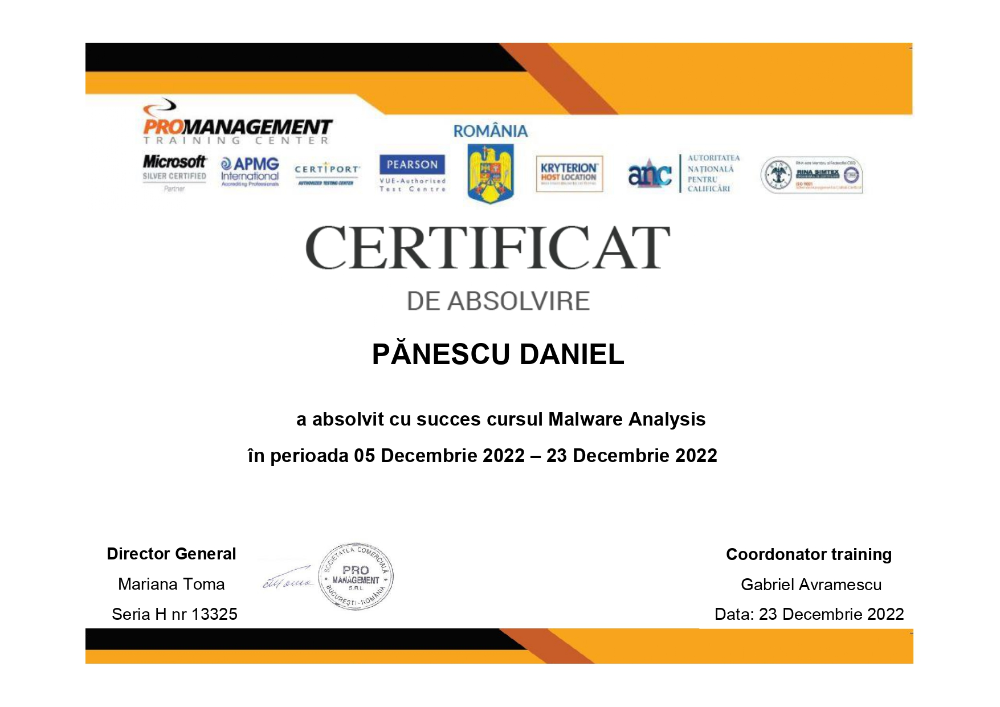
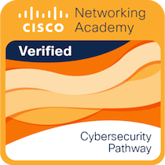

I am a skilled Cyber Security Analyst with over 3 years of experience in the field and an additional 7 years of experience in Networking and Communication. My background includes working in a military environment and participating in national and international exercises and missions. I have a strong track record of success in monitoring, detecting, analyzing, and threat hunting, as well as expertise in SIEM (Security Information and Event Management) analysis using tools such as ArcSight, Splunk, QRadar, Wazuh, and ElasticSearch.
My experience extends to a variety of security solutions, including Intrusion Prevention Systems (NSP McAfee IDS/IPS), Firewalls (Fortigate, Palo Alto, Cisco ASA, OPNsense, PfSense), Web Application Firewalls (FortiWeb, Radware Appwall), Email Gateways (Cisco Email Security Appliance, FortiMail), Web Proxies (Cisco Web Security Appliance, Squid), Email Security (FireEye EX, Threat Grid, Advanced Malware Protection), Network Security (FireEye NX), SOAR (Palo Alto Cortex XSOAR, Splunk Phantom), Full Packet Capture (Moloch/Arkime), SIRP (The Hive Project, Corbex), Sharing Platforms (MISP, OpenCTI), Vulnerability Assessment (Tenable SC/Nessus, AppScan, Acunetix), Anti-Virus (Bitdefender Gravity Zone), Endpoint Detection and Response (Bitdefender Gravity Zone), and Data Loss Prevention (McAfee).
What i'm doing
Cyber Security
As a cybersecurity professional, I specialize in defending computers, servers, networks, and data from malicious attacks.
This includes implementing various security measures and strategies to detect, prevent, and respond to cyber threats, ensuring the confidentiality, integrity, and availability of sensitive information and systems.
I work to safeguard my organization's reputation and assets against the potential damage of a cyber attack. My expertise in this field is essential for maintaining the integrity and security of my company's digital assets and systems.
Threat Hunting
As a threat hunter, I specialize in proactively identifying previously unknown or ongoing non-remediated threats within an organization's network.
This includes utilizing advanced analytical techniques and tools to detect and investigate potential threats that may have evaded traditional security measures.
I actively search for indicators of compromise and identify potential security breaches before they can cause significant damage to the organization's network, data, and reputation.
My goal is to continuously monitor the organization's network and enhance the overall security posture of the organization through my efforts in threat hunting.
Networking
As a networking professional, I am responsible for the development and administration of networks including local area networks (LANs), wide area networks (WANs). My expertise includes configuring and installing network hardware and software, monitoring network performance, troubleshooting issues, planning and implementing network upgrades and expansions, and ensuring compliance with security protocols.
I ensure smooth communication and data transfer within an organization and connecting to external networks. My skills in networking are essential for the effective and efficient operation of the organization.
Web development
As a web developer, I am responsible for the high-quality development of professional websites. This includes analyzing user needs and requirements, designing and implementing website features and functionality, and ensuring that websites are optimized for search engines and are responsive to different devices.
I use a combination of languages and frameworks such as HTML, CSS and others to build and maintain websites.
I also test, debug and optimize the website for maximum speed and scalability. I am constantly working to improve my skills and stay up to date with the latest web development technologies and trends.
Training | Qualifications

Malware Analysis
Since finding malware is a common occurrence for anyone that performs incident response, knowing how to properly analyze that malware is an essential skill. In this course, Malware Analysis Fundamentals, you'll gain the ability to analyze malware. First, you'll explore how to keep yourself and your systems safe when analyzing malware. Next, you'll discover how to get information on the malware by examining its characteristics. Finally, you'll learn how to execute malware and watch how it interacts with your system. When you're finished with this course, you'll have the skills and knowledge of malware analysis needed to safely and successfully determine what a malware sample does and the risk it presents.
The most important course as it covers all the fundamentals to understand the Next-Generation FireWall from the ground up. Even experienced firewall engineers take a lot out of this course as it includes, besides the architecture and management essentials, topics like Application Identification, Content ID (IPS, Anti-Virus/-Spyware, URL Filtering, File Blocking), SSL Decryption and User Identification which are all features usually not supported by legacy firewalls. In addition to the official content, we also teach security best practices that will enable students to fully leverage the Palo Alto Networks Next-Generation Firewall’s potential as we not only explain the theory but how to use every feature in real life.
- Configure and manage the essential features of Palo Alto Networks Next Generation Firewalls;
- Configure and manage Security and NAT policies;
- Configure and manage Threat Prevention strategies to block known and unknown threats;
- Monitor network traffic using the interactive web interface and firewall reports.
Email Security Appliance
Deploy, integration with Threat Grid Sandbox and Advanced Malware Protection and how to use the Cisco® Email Security Appliance to establish email system protection against phishing, ransomware, business email compromise and help streamline email security policy management.
FortiDDoS
Form network baseline data, and how to recognize and mitigate individual and distributed denial of service attacks while preserving service and network performance.
Splunk Fundamentals 1
This eLearning course teaches students how to use Splunk to create reports and dashboards and explore events using Splunk's Search Processing Language. Students will learn the basics of Splunk's architecture, user roles, and how to navigate the Splunk Web interface to create robust searches, reports, visualizations, and dashboards.
Splunk Fundamentals 2
This course is for power users who want to learn about fields and how to use fields in searches. Topics will focus on explaining the role of fields in searches, field discovery, using fields in searches, and the difference between persistent and temporary fields.
FortiWeb
Deploy, configure, and troubleshoot FortiWeb. You will learn key concepts of web application security, and explore protection and performance features. You will experience traffic and attack simulations that use real web applications. You will learn how to distribute the load from virtual servers to real servers, while enforcing logical parameters, inspecting flow, and securing HTTP session cookies.
IXIA BreakingPoint
All-in-one applications and network security testing platform.

Cyber Security Pathway
Cisco verifies the earner of this badge successfully completed the Cybersecurity Pathway with Cisco Networking Academy. They understand techniques to monitor and protect the network, including firewalls, cloud security, and cryptography, they are familiar with security alerts and governance, and they have skills to perform network vulnerability assessment and create a risk management plan, including forensic investigations and incident response planning.
The study and application of programming languages, software development methodologies, and computer systems architecture to design, build, and maintain software applications. This includes in-depth understanding of data structures, algorithms, and software design patterns, as well as proficiency in database management systems, network infrastructure, and project management. Additionally, the program covers the theoretical foundations of computer science, such as formal models, automata theory, and computational complexity, and the use of these concepts to analyze and optimize software systems. Graduates of this program will have a comprehensive understanding of the principles and practices of computer science and the ability to apply them in a professional setting.
Military School of Communications, Information Technology and Cyber Defense, Sibiu
Computer Systems Networking and Telecommunications
As a graduate of a military IT specialist school, I received specialized training in the operation, maintenance and administration of military communications technology and IT equipment, including systems and networks. My training covered a wide range of topics, including IT and cyber security, communications systems and networks administration, and the use of communications equipment and techniques in military operations. Additionally, I gained expertise in the management of micro-structures at crew, group, and unit level, as well as cyber defense. My training also included training as a military specialist in the field of systems security administration, communications networks and computer science. I have the skills and knowledge to ensure the smooth operation and maintenance of equipment and communications equipment in various military scenarios.
Experience
Cyber Security Analyst
2019 — Present | Cyber Defense Agency
As a Cybersecurity professional, my main responsibility is to protect sensitive information from unauthorized access or use by identifying and assessing potential security risks, designing and implementing security controls, and monitoring systems for unusual activity. I use various tools and techniques such as Intrusion Prevention Systems, Firewalls, Email Gateways, and Vulnerability Assessment tools to accomplish this. In case of security incident, I follow incident response procedures, document and analyze the incident, and improve overall security. I also stay up to date with the latest cybersecurity trends and threats and implement best practices to improve the organization's security posture.
Security Administrator
2018 — 2019 | Ministry of National Defense
Installing, administering and troubleshooting network security solutions, updating software with the latest security patches, creating network policies and authorization roles, defending against unauthorized access, modifications and destruction, consulting with staff, managers and executives about the best security practices and providing technical advice, configuring and supporting security tools such as firewalls and anti-virus software, training staff to understand and use security protocols, performing vulnerability and penetration tests, identifying and defending against threats, developing disaster recovery plans, configuring security systems, analyzing security requirements, recommending improvements and monitoring network traffic for suspicious behavior.
Network Administrator
2016 — 2018 | Ministry of National Defense
Designing, installing, and managing network infrastructure, ensuring functionality of computer networks and connection/communication equipment, server administration, identifying and resolving network and system issues, consulting with clients to specify requirements and design solutions, budgeting for equipment and assembly costs, assembling new systems, maintaining existing software/hardware and upgrading as needed, monitoring networks to improve performance, working with IT support personnel, and providing network administration and support.
System Administrator
2015 — 2016 | Ministry of National Defense
As an IT professional, I am responsible for installing and configuring software and hardware, managing network servers and technology tools, setting up accounts and workstations, monitoring performance and maintaining systems according to requirements, troubleshooting issues and outages, ensuring security through access controls, backups and firewalls, upgrading systems with new releases and models, developing expertise to train staff on new technologies, and building an internal wiki with technical documentation, manuals and IT policies.
Web Developer
2018 — Present | Freelancer
As a software developer, responsibilities include writing well-designed, testable, and efficient code using best practices, creating website layouts and user interfaces using standard HTML/CSS, integrating data from various back-end services and databases, gathering and refining specifications and requirements based on technical needs, creating and maintaining software documentation, maintaining, expanding, and scaling our site, staying informed of emerging technologies and industry trends and applying them to operations and activities, and working with web designers to match visual design intent.